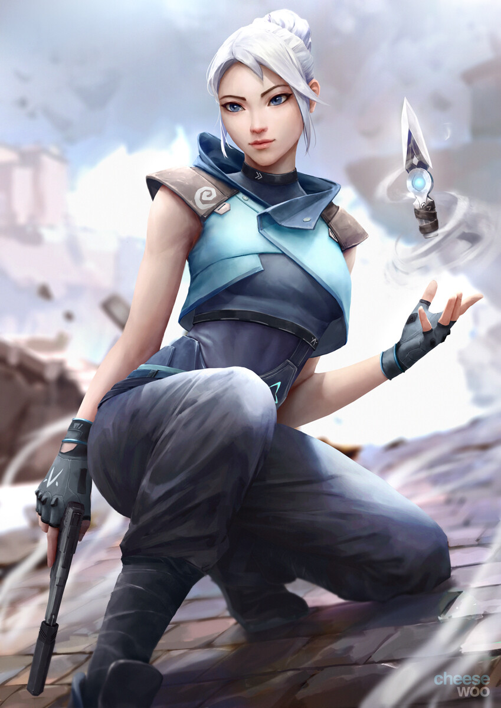
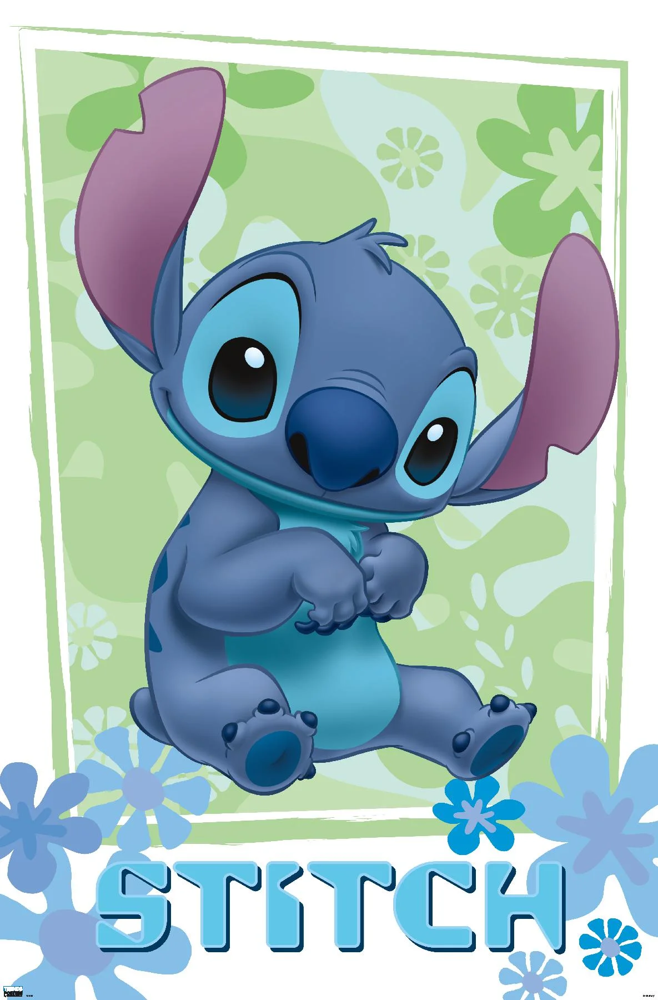
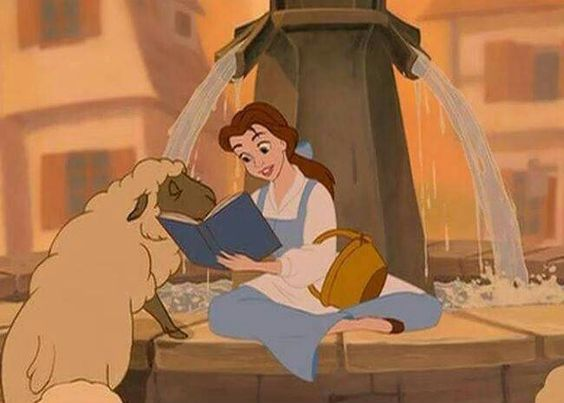
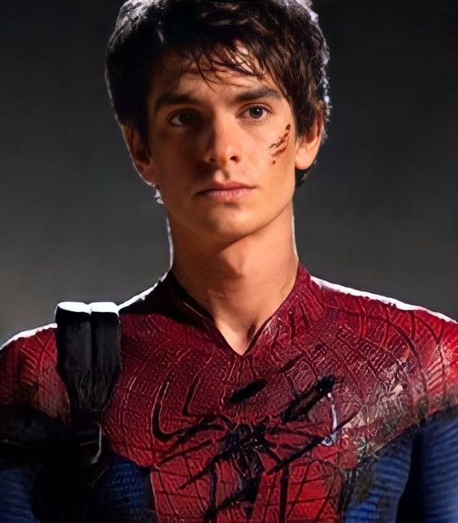

| Rhianna's Favorite Game and Cartoon Characters ✧･ﾟ: *✧･ﾟ:* |
|---|
| Image | Description | Personality/Ability |
|---|---|---|
|  | Jett is a duelist agent in the game Valorant. She came from South Korea. She specializes in mobility and assasinations. | ○can dash short distances to catch-up to enemies or to escape from risky situations.
○can propel herself upwards to reach grounds no other agent can go to. |
|  | Also known as experiment 626, he came from the movie Lilo and Stitch. He is an illegal experiment created by the scientist Dr. Jumba Jookiba. He was designed to be super strong, indestructable, and super smart. His purpose of creation was to spread chaos and misery across the universe. | ○looks like a dog ○can move really heavy objects despite his size ○can see in the dark ○bulletproof and fireproof ○thinks faster than a computer |
 |
Madeline Hatter, from Ever After High, is the daughter of the "Mad Hatter" in wonderland. She is part of the Rebels group along with her best friend Raven Queen. She is also mad, like her father, but she is a good person in the series. She would sometimes talk to the narrators of the story whenever they would start arguing. | ○bright, energetic, and friendly ○sees things in a more positive way ○loves tea time ○carries a tea set everywhere ○can talk gibberish |
|  | Belle, from the movie Beauty and the Beast, is an imaginative and intelligent girl. She is the book-loving daughter of an inventor. When her father got capture by a rude beast in his castle, Belle saves her by exchanging her freedom with her father. | ○always carries a book ○friendly and curious ○confident and pretty ○chooses personality over looks |
|  | Peter Parker, also known as Spider-man, is an angsty teenage highschool student who is bitten by a radioactive spider. He is being taken care of his Uncle Ben, and Aunt May. Due to the bite, he gained super strength and spider-like abilities. There are a lot of versions of him, which makes the multiverse of Spider-mans. He uses power to help others with their life. He also joined the Avengers, a team of superheroes. | ○can stick and climb up walls ○smart in science and math ○can swing with his spider web power ○brave and clever |
References:
Liew I. (September 20). Jett- Valorant. cheesewoo.artstation.com. https://cheesewoo.artstation.com/projects/486B32
UBuy. (n.d). Disney Lilo and Stitch Flowers Wall Poster - High Quality Multicolor Artwork 22.375 x 34. ubuy.com.ph. https://www.ubuy.com.ph/product/8WHPLGNUG-disney-lilo-and-stitch-flowers-wall-poster-22-375-x-34
Pinterest. (n.d). ever after high - madeline hatter icon. pinterest.com. https://ph.pinterest.com/pin/45247171251248057/
Pinterest. (n.d). Home Page. pinterest.com https://ph.pinterest.com/pin/1618549862731036/
Pinterest. (n.d). Andrew Garfield TASM. pinterest.com https://ph.pinterest.com/pin/7177680647915495/